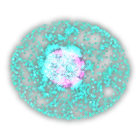
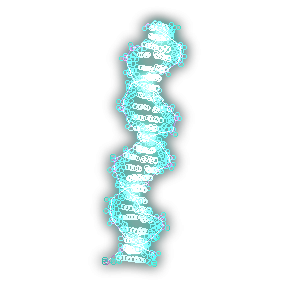
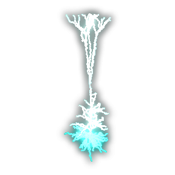
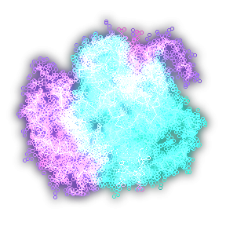

Biology
BiologyLive classroom tests

Choose how you join
Students take the test on their iPad. You see every screen live, get an alert when someone leaves, and can message any student privately.
นักเรียนสอบบน iPad ครูเห็นทุกหน้าจอแบบสด
I'm a studentJoin with the code from your teacher · เข้าสอบด้วยรหัส


I'm the teacherMake tests with AI, start them, watch the class live
How a test runs: 3 steps
- Make a test from your paper with AI, or type it yourself.
- Students scan the QR code and join on their iPads.
- Watch every screen live; anyone who leaves is locked.